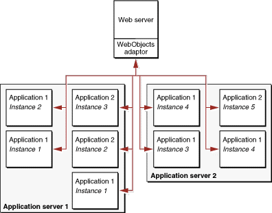

| PATH |

Static websites and traditional client-server applications have one strong suit: they both leverage the power of the client platform, minimizing the load on the server. It doesn't take all that much processing power to serve up a set of static Web pages. Dynamic Web applications, although a tremendous advance over static pages, require additional server power to access the dynamic data and construct the Web pages or Java Client user interface on the fly.
The WebObjects application server is both efficient and scalable. With WebObjects, if more power, reliability, or failover protection is needed, you can run multiple instances of your application, either on one or on multiple application servers (see Figure 2-4). You can choose from one of several load-balancing algorithms (or create your own) to determine which application instance each new user should connect to. And, either locally or from a remote location, you can analyze site loads and usage patterns and then start or stop additional application instances as necessary. Load balancing is a very powerful feature of WebObjects that allows you to add more server capacity as the need arises without needing to implement a load-balancing algorithm yourself.
Figure 2-4 Multiple instances, multiple applications
